News
2026
Oral Presentation Award
November 1, 2026
Congratulations to Hung-Ming Chen (陳泓銘) for winning the oral presentation award in IUMRS-ICA 2026!! (LINK)
Nano Energy paper published
October 19, 2026
Congratulations! Hung-Ming Chen, Pei-En Jan, Hao-Cheng Lin, Yung-Tang Chuang, and our collaborators' paper "Circularly Polarized Single-Photon Emission from Cavity-Structured Perovskite Quantum Emitters Coupled with Cholesteric Liquid Crystals" has been published in Nano Energy (impact factor 16.7)!! (LINK)
Advanced Materials Inside Front Cover
October 16, 2026
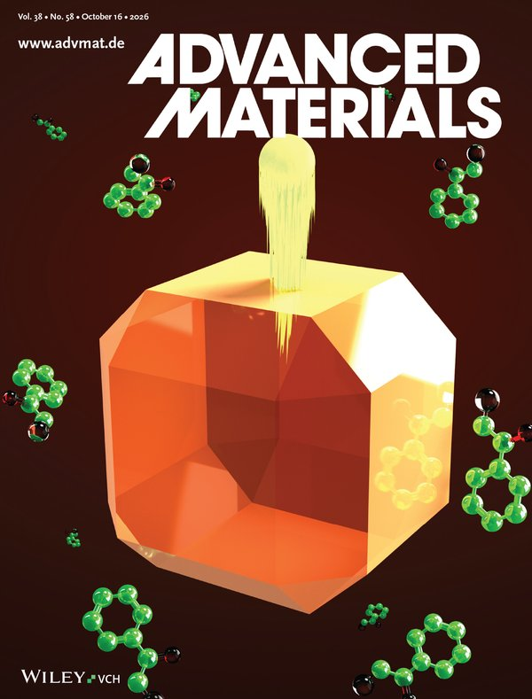
Our paper "Single-Photon Superradiance in Giant Rhombicuboctahedral CsPbI3 Nanocrystals" is featured on the inside front cover of Advanced Materials! Cheers! (LINK)
ACS Energy Letters paper published
October 16, 2026
Congratulations! Yun-Sheng Jheng, Hao-Cheng Lin, I-Ting Liu, Zong-Han Lee, Ping-Hsun Tsai, Hung-Ming Chen, and our collaborators' paper "Vacuum-Evaporated Molecules with Giant Spontaneous Orientation Polarization for Inverted Perovskite Solar Cells" has been published in ACS Energy Letters (impact factor 18.2)!! (LINK)
Undergraduate Research Paper Award
October 7, 2026
Congratulations to Chih-Ling Yu for winning the Distinguished Award of 2026 Undergraduate Research Paper Award. Cheers!!! 賀游直羚獲115年度大學部論文競賽特優!!! (LINK)
Nano Energy paper published
September 26, 2026
Congratulations! Mu-Huan Hsieh, Ping-Hsun Tsai, Yung-Tang Chuang, Hung-Ming Chen, Yung-Ling Chiu, and our collaborators' paper "Short Zwitterionic Ligand Enabled Pure Phase n = 3 Pure-Blue Emissive CsPbBr3 Core-Shell Nanoplatelets" has been published in Nano Energy (impact factor 16.7)!! (LINK)
TSMC Ph.D. Scholarship
September 1, 2026
Congratulations to Yun-Sheng Jheng (鄭雲升) for winning the TSMC Ph.D. Scholarship (台積電博士獎學金)!! (LINK)
Advanced Materials paper published
August 8, 2026
Congratulations! Ping-Hsun Tsai, Yung-Tang Chuang, Hung-Ming Chen, Tzu-Hao Liao, and our collaborators' paper "Single-Photon Superradiance in Giant Rhombicuboctahedral CsPbI3 Nanocrystals" has been published in Advanced Materials (impact factor 29.1)!! (LINK)
Advanced Optical Materials paper published
July 31, 2026
Congratulations! Zong-Han Lee, Hao-Cheng Lin, Hung-Ming Chen, Yung-Tang Chuang, Cheng-Yueh Chen, and our collaborators' paper "Transcending the Speed-Detectivity Trade-Off via Self-Powered, Lead-Free Pyroelectric Germanium Perovskite Photodetectors" has been published in Advanced Optical Materials (impact factor 7.2)!! (LINK)
Graduate Student Paper Presentation Competition
May 26, 2026
Congratulations to Hung-Ming Chen (陳泓銘) for winning the first place in the NTHU College of Engineering Graduate Student Paper Presentation Competition (工學院研究生論文發表競賽第一名)!! (LINK)
Science Advances paper published
May 1, 2026
Congratulations! Tzu-Hao Liao, Yung-Tang Chuang, Pei-En Jan, Hao-Cheng Lin, and our collaborators' paper "Ultrafast, nonblinking single-photon sources from perovskite quantum dots in plasmonic nanocavities" has been published in Science Advances (impact factor 12.5)!! (LINK)
Welcome new members
April 7, 2026
Welcome new members! Master student: Yi-Ting Liu (劉怡廷); undergraduate students: Shi-Tong Li (李思同), Fang-Hsun Shih (石芳熏), Hao-En Chang (張浩恩), Ting-Hsuan Liu (劉庭亘), Chih-Ching Chang (張智晴), Hsin-En Huang (黃新恩), Chao-Shuo Chen (陳晁碩), You-Jyun Chen (陳宥鈞).
ACS Applied Materials & Interfaces published
March 19, 2026
Congratulations! Yun-Sheng Jheng, Cheng-Yueh Chen, Pei-En Jan, Hung-Ming Chen, Hao-Cheng Lin, Ping-Hsun Tsai and our collaborators' paper "Realizing High-Performance Vacuum-Deposited Inverted α-FAPbI3 Perovskite Solar Cells through Saturated-Humidity Annealing" has been published in ACS Applied Materials & Interfaces (impact factor 8.2)!! (LINK)
Welcome new members
February 25, 2026
Welcome new members! Master student: Jia-Sui Hong (洪嘉穗); undergraduate students: Yi-Chieh Cheng (鄭衣倢).
Acs Energy Letters paper published
January 26, 2026
Congratulations! Yu-Jer Wu, Cheng-Yueh Chen, Yung-Tang Chuang, Hao-Cheng Lin, Pei-En Jan, Hung-Ming Chen, Ping-Hsun Tsai and our collaborators' paper "Efficient and Bright All-Vacuum-Deposited Perovskite Light Emitting Diode via Guanidinium Doping and Ultrathin Lithium Bromide Interfacial Layer" has been published in ACS Energy Letters (impact factor 18.2)!! (LINK)
2025
Daxin Materials Researcher Scholarship
November 20, 2025
Congratulations to Yun-Sheng Jheng (鄭雲升) for his winning of the Daxin Materials Researcher Scholarship (達興材料研究生獎學金)!!
Best Poster Award
November 15, 2025
Congratulations to Tzu-Hao Liao (廖子豪) for winning the best poster award in the A-COE 2025 poster section!!
Undergraduate Research Paper Award
October 23, 2025
Congratulations to Pin-Hsuan Chiang for winning of 2025 Undergraduate Research Paper Award. Cheers!!! 賀江品萱獲114年度大學部研究論文競賽優等!!! (LINK)
ACS Applied Electronic Materials paper published
September 6, 2025
Congratulations! Hao-Cheng Lin, Yung-Tang Chuang, Pei-En Jan, Hung-Ming Chen, and our collaborators' paper "Efficient Cs3Cu2I5 X-ray Scintillators by Mass-Production-Applicable Fast-Closed-Space-Evaporation" has been published in ACS Applied Electronic Materials (impact factor 4.7)!! (LINK)
Small paper published
August 22, 2025
Congratulations! Hung-Ming Chen, Yung-Tang Chuang, Hao-Cheng Lin, and our collaborators' paper "iant Room-Temperature Chiral Quantum Emission (glum >0.4) From Lattice-Symmetry-Broken Perovskites" has been published in Small (impact factor 12.1)!! (LINK)
ACS Applied Materials & Interfaces paper published
August 17, 2025
Congratulations! Cheng-Yueh Chen, Hao-Cheng Lin, Pei-En Jan, Hung-Ming Chen, Yung-Tang Chuang, and our collaborators' paper "Dual-Mode Photonic Synapse Based on a Lead-Free 2D Ruddlesden–Popper Perovskite for Neuromorphic Vision" has been published in ACS Applied Materials & Interfaces (impact factor 8.2)!! (LINK)
NSC College Student Research Scholarship
June 26, 2025
Congratulations to Ji-Ting Jang (章繼榳) and Pin-Hsuan Chiang (江品萱) for winning the NSC College Student Research Scholarship (國科會大專生研究計畫)!!
Welcome new members
April 7, 2025
Welcome new members! Undergraduate students: Ai-Ju Shih (石艾儒), Jin-Wei Wu (伍晉緯), Kai-Chen Chang (張凱宸), Ray-Ting Cheng (鄭睿霆), Chih-Ling Yu (游直羚), Yi-Ting Wang (汪奕廷), Yong-Jie Lee (李勇頡).
ACS Applied Electronic Materials paper published
January 9, 2025
Congratulations! Chen-Hsun Lin (林辰勳), Yung-Tang Chuang (莊詠棠), Cheng-Yueh Chen (陳承岳), Hung-Ming Chen (陳泓銘), and our collaborators' paper "Spontaneous High-Dynamic-Range Random Current Spiking in BaF2 Memristors" has been published in ACS Applied Electronic Materials (impact factor 4.4)!! (LINK)
2024
Best Poster Award
November 29, 2024
Congratulations to Pei-En Jan (詹沛恩) for winning the best poster award in the A-COE 2024 poster section!!
ACS Applied Materials & Interfaces paper published
October 9, 2024
Congratulations! Guang-Hsun Tan (談光勳), Hao-Cheng Lin (林顥承), and our collaborators' paper "Highly Efficient Manganese Bromides with Reversible Luminescence Switching through Amorphous–Crystalline Transition" has been published in ACS Applied Materials & Interfaces (impact factor 8.3)!!(LINK)
Undergraduate Research Paper Award
September 27, 2024
Congratulations to Mu-Huan Hsieh and Yun-Sheng Jheng for winning of 2024 Undergraduate Research Paper Award. Cheers!!! 賀謝沐桓、鄭雲升獲113學年度大學部研究論文競賽優等與佳作!!! (LINK)
Small paper published
September 17, 2024
Congratulations! Ping-Hsun Tsai (蔡秉勳), Tzu-Hao Liao (廖子豪), Yung-Tang Chuang (莊詠棠), Pei-En Jan (詹沛恩), Hao-Cheng Lin (林顥承), Guang-Hsun Tan (談光勳), and our collaborators' paper "Bright Structural-Phase-Pure CsPbI3 Core-PbSO4 Shell Nanoplatelets With Ultra-Narrow Emission Bandwidth of 77 meV at 630 nm" has been published in Small (impact factor 13.0)!!
Advanced Functional Materials paper published
September 6, 2024
Congratulations! Pei-En Jan (詹沛恩), Ren-Wei Cheng (鄭人瑋), Yung-Tang Chuang (莊詠棠), Yung-Ling Chiu (邱泳霖), Guang-Hsun Tan (談光勳), and our collaborators' paper "Molecular Design Strategy for Meta-Substituted Aromatic Organic Halides in Zero-Lead-Release Halide Perovskites with Efficient Waterproof Light Emission" has been published in Advanced Functional Materials (impact factor 18.5)!!
Welcome new members
April 29, 2024
Welcome new members! Undergraduate students: Shau-Chen Huang (黃少辰), Ting-An Li (李庭安), Ming-Hao Chu (朱銘浩), Pin-Hsuan Chiang (江品萱).
2023
ACS Nano paper published
December 14, 2023
Congratulations! Po-Ting Lai (賴柏廷), Cheng-Yueh Chen (陳承岳), Hao-Cheng Lin (林顥承), and our collaborators' paper "Harnessing 2D Ruddlesden–Popper Perovskite with new Polar Organic Cation for Ultra-sensitive Multi-bit Nonvolatile Transistor-type Photomemristors" has been published in ACS Nano (impact factor 17.1)!!
Small paper published
December 10, 2023
Congratulations! Yung-Tang Chuang (莊詠棠), Tzu-Yu Lin (林子瑜), Guang-Hsun Tan (談光勳), Pei-En Jan (詹沛恩), Hao-Cheng Lin (林顥承), Hung-Ming Chen (陳泓銘), and our collaborators' paper "Highly Efficient MAPbI3-based Quantum Dots Exhibiting Unusual Nonblinking Single Photon Emission at Room Temperature" has been published in Small (impact factor 13.3)!!
Acs Nano paper accepted
December 9, 2023
Congratulations! Po-Ting Lai (賴柏廷), Cheng-Yueh Chen (陳承岳), Hao-Cheng Lin (林顥承), and our collaborators' paper "Harnessing 2D Ruddlesden–Popper Perovskite with new Polar Organic Cation for Ultra-sensitive Multi-bit Nonvolatile Transistor-type Photomemristors" has been accepted for publication in ACS Nano (impact factor 17.1)!!
Lam Outstanding Science Scholarship
December 5, 2023
Congratulations to Yu-Che Hou (侯宇哲) for his winning of the Lam Outstanding Science Scholarship (科林研發傑出科技獎學金)!!
Small paper accepted
November 20, 2023
Congratulations! Yung-Tang Chuang (莊詠棠), Tzu-Yu Lin (林子瑜), Guang-Hsun Tan (談光勳), Pei-En Jan (詹沛恩), Hao-Cheng Lin (林顥承), Hung-Ming Chen (陳泓銘), and our collaborators' paper "Highly Efficient MAPbI3-based Quantum Dots Exhibiting Unusual Nonblinking Single Photon Emission at Room Temperature" has been accepted for publication in Small (impact factor 13.3)!!
Best Poster Award
November 3, 2023
Congratulations to Yung-Tang Chuang (莊詠棠) and Guang-Hsun Tan (談光勳) for winning the best poster award in the A-COE 2023 poster section!!
ACS Applied Materials & Interfaces paper published
September 11, 2023
Congratulations! Yi-Jhen Chiu (邱羿臻), Yu-Che Hou (侯宇哲), and our collaborators' paper "Tuning Electrochemical Stability of 5,10-Ditolylphenazine-Based Antiaromatic Materials for Unipolar Memristor toward Artificial Synapses Application" has been published in ACS Appl. Mater. Interfaces (impact factor 10.383)!!
Welcome new members
May 8, 2023
Welcome new members! Undergraduate students: Yun-Sheng Jheng (鄭雲升), Yu-Tso Liu (劉育佐), Mu-Huan Hsieh (謝沐桓), Chen-Zhang Wen (溫宸章), Yi-Jyun Hwang (黃奕鈞).
Small Front Cover
February 23, 2023

Our paper "Highly Luminescent Earth-Benign Organometallic Manganese Halide Crystals with Ultrahigh Thermal Stability of Emission from 4 to 623 K" is featured on the cover of Small! Cheers! (LINK)
Advanced Science paper published
February 7, 2023
Congratulations! Chung-An Hsieh (謝仲安), Guang-Hsun Tan (談光勳), Yung-Tang Chuang (莊詠棠), Hao-Cheng Lin (林顥承), Po-Ting Lai (賴柏廷), Pei-En Jan (詹沛恩) and our collaborators' paper "Vacuum-Deposited Inorganic Perovskite Light-Emitting Diodes with External Quantum Efficiency Exceeding 10% via Composition and Crystallinity Manipulation of Emission Layer under High Vacuum" has been published in Advanced Science (impact factor 15.444)!!
2022
Small paper published
December 11, 2022
Congratulations! Guang-Hsun Tan (談光勳), Yung-Tang Chuang (莊詠棠), Hao-Cheng Lin (林顥承), Chung-An Hsieh (謝仲安) and our collaborators' paper "Highly Luminescent Earth-Benign Organometallic Manganese Halide Crystals with Ultrahigh Thermal Stability of Emission from 4 to 623 K" has been published in Small (impact factor 15.153)!!
Small paper accepted
November 29, 2022
Congratulations! Guang-Hsun Tan (談光勳), Yung-Tang Chuang (莊詠棠), Hao-Cheng Lin (林顥承), Chung-An Hsieh (謝仲安) and our collaborators' paper "Highly Luminescent Earth-Benign Organometallic Manganese Halide Crystals with Ultrahigh Thermal Stability of Emission from 4 to 623 K" has been accepted for publication in Small (impact factor 15.153)!!
CTCI Foundation Award
November 1, 2022
Congratulations to Po-Ting Lai (賴柏廷) for his winning of the CTCI Foundation Award(中技社獎學金)!!
Lam Research Award
November 1, 2022
Congratulations to Po-Ting Lai (賴柏廷) and Tsung-Kai Su (蘇琮凱) for their winning of the Lam Research Thesis Award(科林研發論文獎)!!
Advanced Electronic Materials paper published
September 4, 2022
Congratulations! Zhe-Min Shi (施哲敏) , Yu-Che Hou (侯宇哲) , Cheng-Yueh Chen (陳承岳) , Guang-Hsun Tan (談光勳) , Hao-Cheng Lin (林顥承) , Po-Ting Lai (賴柏廷) and our collaborators' paper "Highly Thermally Resilient Dual-Mode (Digital/Analog) Amorphous Yttrium Fluoride Memristors Exhibiting Excellent Symmetric Linearity" has been published in Advanced Electronic Materials (impact factor 7.633)!!
ACS Nano paper published
July 12, 2022
Congratulations! Tsung-Kai Su (蘇琮凱), Wei-Kai Cheng (鄭維愷), Cheng-Yueh Chen (陳承岳), Wei-Chun Wang (王瑋均), Yung-Tang Chuang (莊詠棠), Guang-Hsun Tan (談光勳) , Hao-Cheng Lin (林顥承) and our collaborators' paper "Room-Temperature Fabricated Multilevel Nonvolatile Lead-Free Cesium Halide Memristors for Reconfigurable In-Memory Computing" has been published in ACS Nano (impact factor 18.027)!!
Welcome new members
June 27, 2022
Welcome new members! Undergraduate students: Chien-Cheng Cheng (鄭健晟), Cai-Xuan Lin (林采璇), Tzu-Hsien Yang (楊子賢), Zong-Han Lee (李宗翰), and Yan-Min Wu (吳彥忞).
Advanced Optical Materials published
June 15, 2022
Congratulations! Chien-Yu Chen (陳建宇) , Yung-I Lin (林泳羿) , Po-Ting Lai (賴柏廷) , Hao-Cheng Lin (林顥承) , Guang-Hsun Tan (談光勳) and our collaborators' paper "Self-Trapped and Free Exciton Dynamics in Vacuum-Deposited Cesium Copper Iodide Thin Films" has been published in Advanced Optical Materials (impact factor 9.926)!!
ACS Applied Materials & Interfaces Front Cover
May 09, 2021
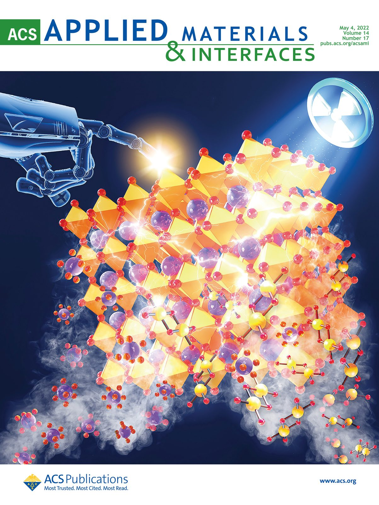
Our paper "All-Vacuum-Deposited Perovskite X-ray Detector with a Record-High Self-Powered Sensitivity of 1.2 C Gy-1 cm-3" is featured on the cover of ACS Applied Materials & Interfaces! Cheers! (LINK)
ACS Applied Materials & Interfaces published
April 19, 2022
Congratulations! Po-Ting Lai (賴柏廷) , Hao-Cheng Lin (林顥承) , Yung-Tang Chuang (莊詠棠) , Chien-Yu Chen (陳建宇) , Wei-Kai Cheng (鄭維愷) , Guang-Hsun Tan (談光勳) , Bo-Wei Hsu (許博惟) , and Lin Yang (楊琳) 's paper "All-Vacuum-Deposited Perovskite X-ray Detector with a Record-High Self-Powered Sensitivity of 1.2 C Gy-1 cm-3" has been published in ACS Applied Materials & Interfaces (impact factor 9.229)!!
Advanced Optical Materials accepted
April 19, 2022
Congratulations! Chien-Yu Chen (陳建宇) , Yung-I Lin (林泳羿) , Po-Ting Lai (賴柏廷) , Hao-Cheng Lin (林顥承) , and Guang-Hsun Tan (談光勳) 's paper " Self-Trapped and Free Exciton Dynamics in Vacuum-Deposited Cesium Copper Iodide Thin Films" has been accepted for publication in Advanced Optical Materials (impact factor 9.926)!!
2021
ACS Applied Materials & Interfaces accepted
May 19, 2021
Congratulations! Shu-Wen Dai (戴淑玟) 's paper "Organic Lead Halide Nanocrystals Providing an Ultra-Wide Color Gamut with Almost-Unity Photoluminescence Quantum Yield" has been accepted for publication in Journal of ACS Applied Materials & Interfaces (impact factor 8.758)!!
ACS Nano paper published
March 17, 2021
Congratulations!! Bo-Wei Hsu (許博惟) , Yung-Tang Chuang (莊詠棠) , Chien-Yu Chen (陳建宇) and our collaborators' paper "Very Robust Spray-Synthesized CsPbI3 Quantum Emitters with Ultrahigh Room-Temperature Cavity-Free Brightness and Self-Healing Ability" has been published in ACS Nano (impact factor 14.588) !!(LINK)
Advanced Intelligent Systems Front Cover
January 22, 2021
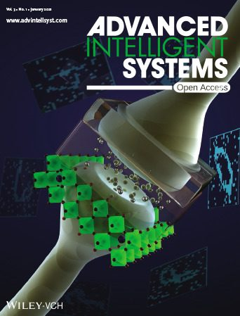
Our paper "Highly Uniform All-Vacuum-Deposited Inorganic Perovskite Artificial Synapses for Reservoir Computing" is featured on the cover of Advanced Intelligent Systems! Cheers! (LINK)
ACS Applied Nano Materials paper published
January 4, 2021
Congratulations! Jian-Syun Ho (何建勳) , Shu-Wen Dai (戴淑玟) and our collaborators' paper "CH3NH3Pb1–xCoxBr3–2xCl2x Perovskite Quantum Dots for Wide-Color Backlighting" has been published in ACS Applied Nano Materials!! (LINK)
2020
Winning of scholarship
December 10, 2020
Congratulations to Shung-An Koh (葛順安) for winning the 2020 USI Education Foundation Scholarship!! (LINK)
Winning of scholarship
November 12, 2020
Congratulations to PhD student Shu-Wen Dai (戴淑玟) for winning the "Research Scholarship Award" in 2020 CTCI Foundation Science and Technology Scholarship !! (LINK)
Advanced Functional Materials paper accepted
Octorber 27, 2020
Congratulations! Lin Yang(楊琳)s paper "Transparent and Flexible Inorganic Perovskite Photonic Artificial Synapses with Dual-Mode Operation" has been accepted for publication in Journal of Advanced Functional Materials (impact factor 16.836)!!
Advanced Intelligent Systems paper accepted
Octorber 1, 2020
Congratulations! Li-Wei Chen(陳立維), Wei-Chun Wang(王瑋均), Chien-Yu Chen(陳建宇), Chih-Ting Hsu(許之婷), Fu-Ching Chiao(譙福慶), Tse-Wei Chen(陳則瑋)'s paper "Highly Uniform All-Vacuum-Deposited Inorganic Perovskite Artificial Synapses for Reservoir Computing" has been accepted for publication in Journal of Advanced Intelligent Systems (New AI x Materials journal)!!
ACS Nano Cover
September 29, 2020
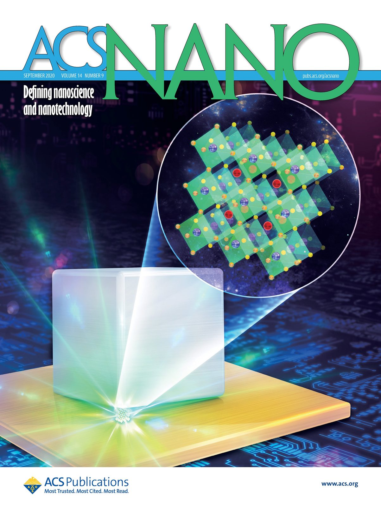
Our paper "Perovskite Quantum Dot Lasing in a Gap-Plasmon Nanocavity with Ultralow Threshold" is featured on the cover of ACS Nano! Cheers! (LINK)
Best Undergraduate Student Research Award
September 29, 2020
Congratulations to Tsung-Kai Su (蘇琮凱) for winning the Best Undergraduate Student Research Award in NTHU MSE undergraduate research competition!!! (LINK)
ACS Nano paper published
July 24, 2020
Congratulations! Bo-Wei Hsu (許博惟) and our coworkers' paper "Perovskite Quantum Dot Lasing in a Gap Plasmon Nanocavity with Ultralow Threshold" has been published in ACS Nano (impact factor 14.588)!! (LINK)
International Advisory Board member of Advanced Energy & Sustainability Research
July 09, 2020
Congratulations to Prof. Hao-Wu Lin to be a member of the International Advisory Board of Advanced Energy & Sustainability Research!! (LINK)
Student research project approved
June 30, 2020
Congratulations! The research project "類比數位雙功能自由切換之類神經計算元件開發與應用" of undergraduate student Tsung-Kai Su (蘇琮凱) has been approved for 2020 Ministry of Science and Technology (MOST) undergraduate student research program.
Approval of Ph.D. application
May 6, 2020
Congratulations to Yung-Tang Chuang (莊詠棠) and Cheng-Yueh Chen (陳承岳) for the approval of Ph.D. application!
MOST Outstanding Research Award
March 25, 2020

Congratulations to Prof. Hao-Wu Lin for his winning of MOST Outstanding Research Award (科技部傑出研究獎) !
MOST 2020 calendar cover image (科技部2020月曆封面圖)
January 21, 2020
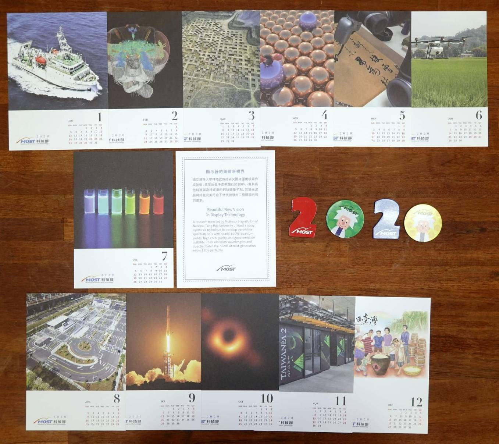
Cheers! Ministry of Science and Technology (MOST), Taiwan has selected our perovskite light emission nanoparticles as 2020 calendar-July cover image! (LINK 1)

Beautiful New Vision in Display Technology
A research team led by Professor Hao-Wu Lin of National Tsing Hua University utilized a spray synthesis technique to develop perovskite quantum dots with nearly 100% quantum yields, high color purity, and good emission stability. Their emission wavelengths and spectra match the needs of next-generation micro LEDs perfectly. (LINK 2)

2019
Graduate Students Research Abroad Program (博士生赴國外研究(千里馬計畫)) approved
November 28, 2019
Congratulations to Chien-Yu Chen! His Graduate Students Research Abroad Program has been approved by Ministry of Science and Technology (MOST)!
ACS Appl. Mater. Interfaces paper accepted
November 28, 2019
Congratulations! Lin Yang, Wei-Lun Tsai, Chia-Shuo Li, Bo-Wei Hsu, Chien-Yu Chen, Chih-I Wu and Hao-Wu Lin's paper "High-Quality Conformal Homogeneous All-Vacuum Deposited CsPbCl3 Thin Films and their UV Photodiode Applications" has been accepted for publication in ACS Appl. Mater. Interfaces (impact factor 8.456)!!
Advanced Functional Materials Inside Front Cover
October 31, 2019
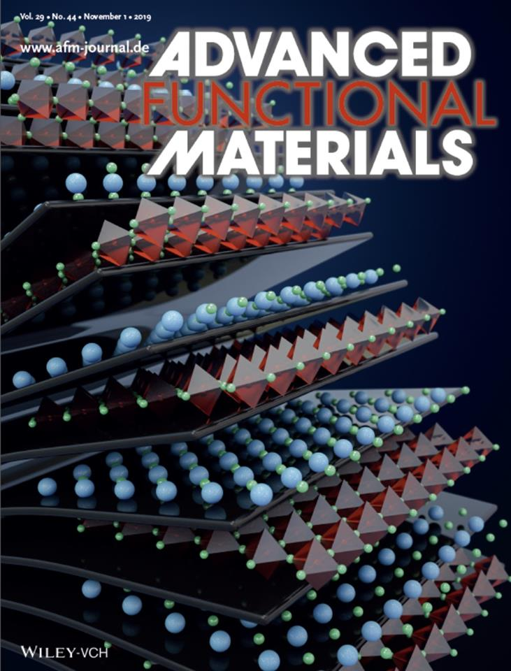
Our paper "Efficient Cesium Lead Halide Perovskite Solar Cells through Alternative Thousand-Layer Rapid Deposition" is featured on the inside front cover of Advanced Functional Materials! Cheers! (LINK)
Advanced Materials Inside Front Cover
June 9, 2019
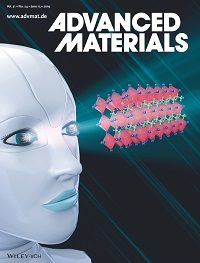
Our paper "Band Tunable Microcavity Perovskite Artificial Human Photoreceptors" is featured on the inside front cover of Advanced Materials! Cheers! (LINK)
Advanced Materials paper published
April 25, 2019
Congratulations! Wei-Lun Tsai, Chien-Yu Chen, Yu-Ting Wen, Ling Yang, Yu-Lun Cheng's paper "Band Tunable Microcavity Perovskite Artificial Human Photoreceptors" has been published in Advanced Materials (impact factor 21.950)!!(LINK)
Journal of Materials Chemistry A paper accepted
January 15, 2019
Congratulations! Chien-Yu Chen, Wei-Hung Lee, Sheng-Yi Hsiao, Wei-Lun Tsai, Lin Yang, Hong-Lin Lin, He-Jun Chou's paper "Vacuum-Deposited Perovskite Photovoltaics for Highly Efficient Environmental Light Energy Harvesting" has been accepted for publication in Journal of Materials Chemistry A (impact factor 9.931)!!
2018
Nature Photonics paper published
March 6, 2018
Congratulations! Tsu-Yu Chou and Ren-Wu Chen-Zheng's paper "Diboron compound-based organic light-emitting diodes with high efficiency and reduced efficiency roll-off" has been published in Nature Photonics (impact factor 31.167)!!(LINK)
Advanced Materials Back Cover
February 16, 2018
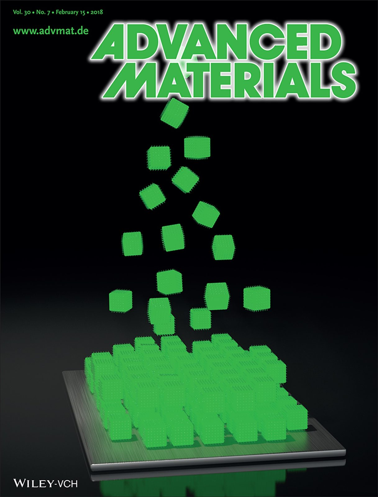
Our paper "Perovskite Quantum Dots with Near Unity Solution and Neat-Film Photoluminescent Quantum Yield by Novel Spray Synthesis" is featured on the back cover of Advanced Materials! Cheers! (LINK)
2017
Advanced Materials paper accepted
November 26, 2017
Congratulations! Shu-Wen Dai, Bo-Wei Hsu, Chien-Yu Chen, Chia-An Lee, Hsiao-Yun Liu's paper "Perovskite Quantum Dots with Near Unity Solution and Neat-Film Photoluminescent Quantum Yield by Novel Spray Synthesis" has been accepted for publication in Advanced Materials (impact factor 19.791)!!
ACS Applied Materials & Interfaces paper accepted
October 31, 2017
Congratulations! Kai-Ming Chiang, Bo-Wei Hsu, Yi-An Chang, Lin Yang, Wei-Lun Tsai's paper "Vacuum-Deposited Organometallic Halide Perovskite Light-Emission Devices" has been accepted for publication in ACS Applied Materials & Interfaces (impact factor 7.504)!!
Welcome new members
October 27, 2017
Welcome new members! Undergraduate students: Chih-Ting Hsu (許之婷), Ying-Lin Lai (賴胤霖), Chia-Hung Yuan (袁嘉宏), Guang-Hsun Tan (談光勳), Tzu-Chieh Huang (黃子杰) and Yu-Xiang Chang (張宇翔).
The Outstanding Young Scholar Award
October 14, 2017
Congratulations to Professor Hao-Wu Lin for winning of Materials Research Society-Taiwan: The Outstanding Young Scholar Award. Cheers!!! 賀林皓武教授獲中國材料科學學會106年優秀年輕學者獎!!!
Nano Energy paper accepted
October 14, 2017
Congratulations! Wei-Lun Tsai, Wei-Hung Lee, Chien-Yu Chen, Sheng-Yi Hsiao, Yu-Jeng Shiau, Bo-Wei Hsu, Yu-Chi Lee's paper "Very High Hole Drift Mobility in Neat and Doped Molecular Thin Films for Normal and Inverted Perovskite Solar Cells" has been accepted for publication in Nano Energy (impact factor 11.553)!!
Winning of scholarship
October 14, 2017
Congratulations to PhD student Bo-Wei Hsu for winning of the "Principal scholarship award"($$$) !!
Welcome new members
May 31, 2017
Welcome new members! Master students: Tse-Wei Chen (陳則瑋), Wan-Ju Tsai (蔡琬如), Hung-Yu Lin (林泓佑), Jian-Syun Ho (何建勳), Yi-An Chang (張譯安) and undergraduate students: Li-Wei Chen (陳立維).
Nano energy paper accepted
May 23, 2017
Congratulations! Wei-Hung Lee, Chien-Yu Chen, Sheng-Yi Hsiao, Wei-Lun Tsai's paper "Boosting thin-film perovskite solar cell efficiency through vacuum-deposited sub-nanometer small-molecule electron interfacial layers" has been accepted for publication in Nano energy (impact factor 11.553)!!
Advanced Materials Front Cover
March 23, 2017
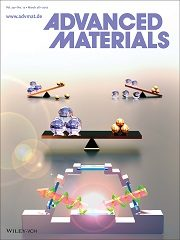
Our paper "All-Vacuum-Deposited Stoichiometrically Balanced Inorganic Cesium Lead Halide Perovskite Solar Cells with Stabilized Efficiency Exceeding 11%" is featured on the front cover of Advanced Materials! Cheers! (LINK)
2016
Organic Electronics paper accepted
December 27, 2016
Congratulations! Kai-Ming Chiang, Zheng-Yu Huang, Wei-Lun Tsai's paper "Orthogonally Weaved Silver Nanowire Networks for Very Efficient Organic Optoelectronic Devices" has been accepted for publication in Organic Electronics (impact factor 3.471)!!
Best Poster Award
December 9, 2016
Congratulations to Sheng-Yi Hsiao for winning the best poster award in the A-COE 2016 poster section!!
Advanced Materials paper accepted
December 6, 2016
Congratulations! Chien-Yu Chen, Hung-Yu Lin, Kai-Ming Chiang, Wei-Lun Tsai's paper "All-Vacuum-Deposited Stoichiometrically Balanced Inorganic Cesium Lead Halide Perovskite Solar Cells with Stabilized Efficiency Exceeding 11%" has been accepted for publication in Advanced Materials (impact factor 17.49)!!
Nature Photonics paper published
November 29, 2016
Congratulations! Ren-Wu Chen-Zheng and Yu-Jeng Shiau's paper "Near-infrared organic light-emitting diodes with very high external quantum efficiency and radiance" has been published in Nature Photonics (impact factor 31.167)!!(LINK)
Approval of Ph.D. application
September 6, 2016
Congratulations to master student Lin Yang for the approval of Ph.D. application!
Promotion to Full Professor
August 6, 2016
Congratulations! Professor Hao-Wu Lin has been promoted to Full Professor.
Welcome new members
August 3, 2016
Welcome new members! Undergraduate students: Wei-Ting Wang (王緯婷), Dan Wang (王單) and administrative assistant: Hsin-Feng Li (李欣鳳).
Successful M.S. thesis defenses
July 25, 2016
Congratulations to Chi-Yu Yang, Yi-Ju Cho, Wei-Yu Liao and Chen-Zheng Ren-Wu for successful thesis defenses!!(LINK)
Student research project approved
July 6, 2016
Congratulations! The research project "P型氧化物半導體在光電元件上的應用與量測" of undergraduate student Wan-Ju Tsai has been approved for 2016 Ministry of Science and Technology (MOST) undergraduate student research program.
ACS Applied Materials & Interfaces paper accepted
July 2, 2016
Congratulations! Hao-Wei Kang, Hong-Lin Lin and Jung-Hao Chang's paper "Cofacial Versus Coplanar Arrangement in Centrosymmetric Packing Dimers of Dipolar Small Molecules: Structural Effects on the Crystallization Behaviors and Optoelectronic Characteristics" has been accepted for publication in ACS Applied Materials & Interfaces (impact factor 7.145)!!
The Young Scholars' Creativity Award
May 22, 2016
Congratulations to Professor Hao-Wu Lin for winning of Foundation For The Advancement of Outstanding Scholarship: The Young Scholars' Creativity Award. Cheers!!! 賀林皓武教授獲傑出人才基金會年輕學者創新獎!!!(LINK)
Welcome new member
May 1, 2016
Welcome new member! Master students: He-Jun Chou (周和均).
Advanced Materials paper accepted
May 2, 2016
Congratulations! Sheng-Yi Hsiao, Hong-Lin Lin, Wei-Hung Lee, Wei-Lun Tsai, Kai-Ming Chiang, Wei-Yu Liao, Chen-Zheng Ren-Wu and Chien-Yu Chen's paper "Efficient All-Vacuum Deposited Perovskite Solar Cells by Controlling Reagent Partial Pressure in High Vacuum" has been accepted for publication in Advanced Materials (impact factor 17.49)!!
Advanced Energy Materials paper accepted
April 27, 2016
Congratulations! Yi-Ju and our collaborators' paper "Evidence of Slow Organic-to-Inorganic Sub-Lattice Thermalization in Methylammonium Lead Halide Perovskites" has been accepted for publication in Advanced Energy Materials (impact factor 16.146)!!
Welcome new members
March 28, 2016
Welcome new members! Master students: Bo-Wei Hsu (許博惟), Tsu-Yu Chou(周子喻) and undergraduate students: Jian-Syun Ho(何建勳), Tse-Wei Chen (陳則瑋).
Organic Electronics paper accepted
February 5, 2016
Congratulations! Chien-Yu Chen's paper "A–D–A type organic donors employing coplanar heterocyclic cores for efficient small molecule organic solar cells" has been accepted for publication in Organic Electronics (SCI Journal, Impact Factor: 3.827)!!
Journal of the American Chemical Society paper accepted
February 5, 2016
Congratulations! Chen-Zheng Ren-Wu, Chi-Yu Yang and our collaborators' paper "A New Molecular Design Based on Thermally Activated Delayed Fluorescence for Highly Efficient Organic Light Emitting Diodes" has been accepted for publication in Journal of the American Chemical Society (impact factor 12.113)!!
Journal of Materials Chemistry C paper accepted
February 5, 2016
Congratulations! Chen-Zheng Ren-Wu and our collaborators' paper "A thermally activated delayed blue fluorescent emitter with reversible externally tunable emission" has been accepted for publication in Journal of Materials Chemistry C (impact factor 4.694)!!
2015
Advanced Functional Materials Front Cover
December 2, 2015
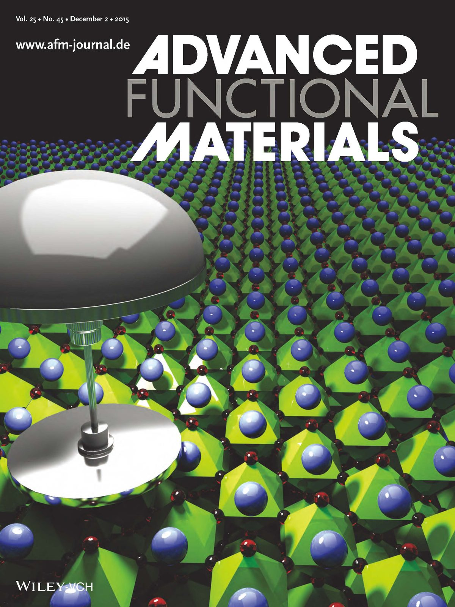
Our paper "Perovskite Photovoltaics for Dim-Light Applications" is featured on the front cover of Advanced Functional Materials! Cheers! (LINK)
Welcome new members
November 23, 2015
Welcome new member! Master student: Yu-Ting Wen (溫鈺婷).
Young Researcher Award
November 3, 2015
Congratulations to Professor Hao-Wu Lin for winning of Taiwan Vacuum Society Young Researcher Award. Cheers!!! 賀林皓武教授獲台灣真空學會年輕學者獎!!!
Winning of scholarship
October 30, 2015
Congratulations to graduate students Shu-Wen Dai and Chien-Yu Chen for winning of the "Principal scholarship award"($$$) !!
Welcome new members
October 30, 2015
Welcome new members! Undergraduate students: Cheng-Hsuan Wu(吳承軒), Pei-Hsun Sung(宋姵勳) and Yu-Chi Lee(李鈺琪).
Welcome new members
October 1, 2015
Welcome new members! Master student: Wei-Hung Lee (李偉弘) and undergraduate student: Hung-Yu Lin(林泓佑).
Advanced Functional Materials paper accepted
September 14, 2015
Congratulations! Chien-Yu Chen, Jung-Hao Chang, Kai-Ming Chiang, Hong-Lin Lin and Sheng-Yi Hsiao's paper "Perovskite Photovoltaics for Dim-Light Applications" has been accepted for publication in Advanced Functional Materials (impact factor 11.8)!!
Approval of Ph.D. application
August 25, 2015
Congratulations to master student Wei-Lun Tsai, Chien-Yu Chen for approval of Ph.D. application!
Welcome new members
August 24, 2015
Welcome new members! Undergraduate student: Wan-Ju Tsai (蔡琬如).
Welcome new members
August 4, 2015
Welcome new members! PhD student: Shu-Wen Dai (戴淑玟), Undergraduate students: Yen-Ju Huang (黃彥儒), Che-Yu Kuo(郭哲瑜) and Hsu-Heng Ho (何旭恒).
Successful Ph.D. dissertation and M.S. thesis defenses
July 28, 2015
Congratulations to Ming-Hong Huang and Chia-An Lee for successful dissertation and thesis defenses!!(LINK)
Scientific Reports paper accepted
July 23, 2015
Congratulations! Yi-Ju Cho, Kuan-Chen Chen, Kai-Ming Chiang, Sheng-Yi Hsiao, and Chang-Wen Chen's paper "Insight into Evolution, Processing and Performance of Multi-length-scale Structures in Planar Heterojunction Perovskite Solar Cells" has been accepted for publication in Scientific Reports (impact factor 5.578)!!
Nanoscale paper accepted
June 19, 2015
Congratulations! Yu-Jeng Shiau and Kai-Ming Chiang's paper "Performance Enhancement of Metal Nanowire-based Transparent Electrodes by Electrically Driven Nanoscale Nucleation of Metal Oxides" has been accepted for publication in Nanoscale (impact factor 7.349)!!
Student research project approved
May 29, 2015
Congratulations! The research project "真空雙元共蒸鍍鈣鈦礦太陽能電池之研究" of undergraduate student Shih-Fu Liu has been approved for 2015 Ministry of Science and Technology (MOST) undergraduate student research program.
Journal of Materials Chemistry A Inside Front Cover
April 22, 2015
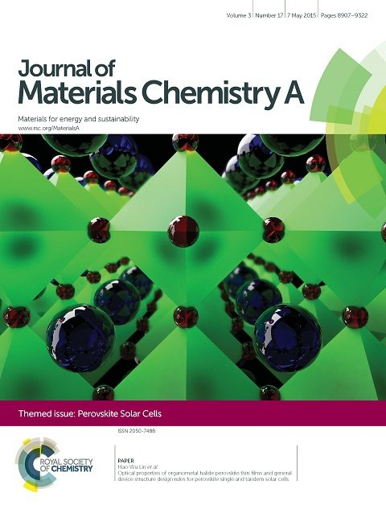
Our paper ""Optical Properties of Organometal Halide Perovskite Thin Films and General Device Structure Design Rules for Perovskite Single and Tandem Solar Cells" is featured on the inside front cover of Journal of Materials Chemistry A! Cheers! (LINK)
Hot article!
April 14, 2015
Our paper "Optical Properties of Organometal Halide Perovskite Thin Films and General Device Structure Design Rules for Perovskite Single and Tandem Solar Cells" is selected as hot article in Journal of Materials Chemistry A (new SCI Journal, Journal of Materials Chemistry Impact Factor: 5.97)!! (LINK)
Nanoscale paper accepted
February 3, 2015
Congratulations! Jung-Hao Chang, Kai-Ming Chiang, Hao-Wei Kang and Wei-Jung Chi's paper "Solution-Processed Molybdenum Oxide Treated Silver Nanowire Network: A Highly Conductive Transparent Conducting Electrode with Superior Mechanical and Hole Injection Properties" has been accepted for publication in Nanoscale (impact factor 6.739)!!
Successful Ph.D. dissertation defense
January 28, 2015
Congratulations to Wei-Chieh Lin for successful Ph.D. dissertation defense!!(LINK)
Organic Electronics paper accepted
January 17, 2015
Congratulations! Ming-Hong Huang, Wei-Chieh Lin, Chia-Chan Fan and Yu-Shih Wang's paper "Tunable Chromaticity Stability in Solution-processed Organic Light Emitting Devices" has been accepted for publication in Organic Electronics (SCI Journal, Impact Factor: 3.676)!!
2014
Solid State Electronics paper accepted
December 18, 2014
Congratulations! Wei-Chieh Lin and Chang-Wen Chen's paper "Solution-Processed Organic Light-Emitting Diodes with a Power Efficacy Exceeding 100 lm/W using Multiple Light Extraction Approaches" has been accepted for publication in Solid State Electronics (SCI Journal, Impact Factor: 1.514)!!
Welcome new members
December 4, 2014
Welcome new members! Graduate students: Yi-An Lai (賴羿安), Yu-Jeng Shiau (蕭宇正), Hong-Lin Lin (林宏霖) and Lin Yang (楊琳).
Gold medal award
November 14, 2014
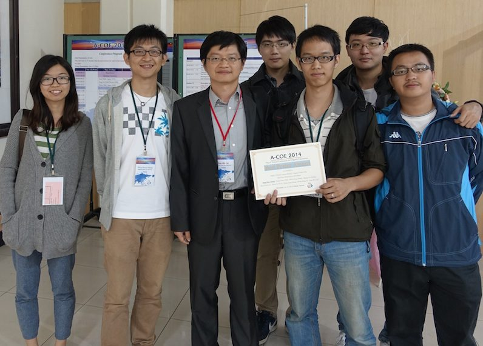
Congratulations to Jung-Hao Chang for winning gold medal award in A-COE 2014 poster section!!
Successful Ph.D. dissertation defense
November 6, 2014
Congratulations to Chang-Wen Chen for successful Ph.D. dissertation defense!!(LINK)
Organic Electronics paper accepted
November 2, 2014
Congratulations! Wei-Chieh Lin's paper "Efficient solution-processed green and white phosphorescence organic light-emitting diodes based on bipolar host materials" has been accepted for publication in Organic Electronics (SCI Journal, Impact Factor: 3.836)!!
Journal of Materials Chemistry A paper accepted
October 29, 2014
Congratulations! Chang-Wen Chen, Sheng-Yi Hsiao, Chien-Yu Chen, Hao-Wei Kang and Zheng-Yu Huang's paper "Optical Properties of Organometal Halide Perovskite Thin Films and General Device Structure Design Rules for Perovskite Single and Tandem Solar Cells" has been accepted for publication in Journal of Materials Chemistry A (new SCI Journal, Journal of Materials Chemistry Impact Factor: 5.97)!!
Most Accessed Article
October 25, 2014
Congratulations to Chang-Wen Chen, Hao-Wei Kang, Sheg-Yi Hsiao, Po-Fan Yang and Kai-Ming Chiang on their article in Advanced Materials "Efficient and Uniform Planar-Type Perovskite Solar Cells by Simple Sequential Vacuum Deposition" - one of the top three most accessed articles in September 2014! (LINK)
Welcome new members
August 22, 2014
Welcome new members!Undergraduate students: He-Jun Chou (周和均), Wan-Ting Lee (李宛亭) and Hsiao-Yun Liu (劉曉韻).
Welcome new members
July 29, 2014
Welcome new members! PhD student: Ching-Chih Fang (方勁智), graduate students: Yi-Ju Cho (卓憶如), Chien-Yu Chen(陳建宇) and undergraduate students: Hong-Lin Lin (林宏霖), Wen-Che Hsu (許文哲) and Shih-Fu Liu (劉世福).
Advanced Materials paper accepted
July 23, 2014
Congratulations! Chang-Wen Chen, Hao-Wei Kang, Sheg-Yi Hsiao, Po-Fan Yang, Kai-Ming Chiang's paper "Efficient and Uniform Planar-Type Perovskite Solar Cells by Simple Sequential Vacuum Deposition" has been accepted for publication in Advanced Materials (Impact Factor: 14.829)!!
Chemistry of Materials paper accepted
July 23, 2014
Congratulations! Chih-Wei Lu and our co-workers' paper "New Molecular Donors with Dithienopyrrole as Electron-Donating Group for Efficient Small Molecule Organic Solar Cells" has been accepted for publication in Chemistry of Materials (Impact Factor: 8.238)!!
Journal of Materials Chemistry A paper accepted
June 11, 2014
Congratulations! Jung-Hao Chang, Wei-Chieh Lin, Kai-Ming Chiang, Kuan-Chen Chen, Wei-Ching Huang, Zheng-Yu Huang's paper "Efficient Inverted Quasi-Bilayer Organic Solar Cells Fabricated by Using Non-Halogenated Solvent Processes" has been accepted for publication in Journal of Materials Chemistry A (new SCI Journal, Journal of Materials Chemistry Impact Factor: 5.97)!!
Organic Electronics paper accepted
May 8, 2014
Congratulations! Yi-Hong Chen, Chang-Wen Chen and Zheng-Yu Huang's paper "Vacuum-Deposited Interconnection Layers for Tandem Solar Cells" has been accepted for publication in Organic Electronics. (SCI Journal, Impact Factor: 3.836)!!
Physical Chemistry Chemical Physics paper accepted
March 12, 2014
Congratulations! Chang-Wen Chen, Zheng-Yu Huang, Yi-Min Lin, Wei-Ching Huang and Yi-Hong Chen's paper "Morphology, Molecule Stacking, Dynamics and Device Performance Correlations in Vacuum-Deposited Small-Molecule Organic Solar Cells" has been accepted for publication in Physical Chemistry Chemical Physics. (SCI Journal, Impact Factor: 3.829)!!
Journal of Materials Chemistry A front cover
February 19, 2014
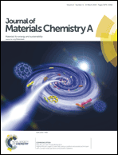
Jung-Hao Chang, Wei-Ching Huang, and Yu-Ting Lin's paper "Highly Efficient Organic Solar Cells Using Solution-Processed Active Layer with Small Molecule Donor and Pristine Fullerene" is featured on the front cover of Journal of Materials Chemistry A! Cheers! (LINK)
Advanced Materials back cover
February 19, 2014
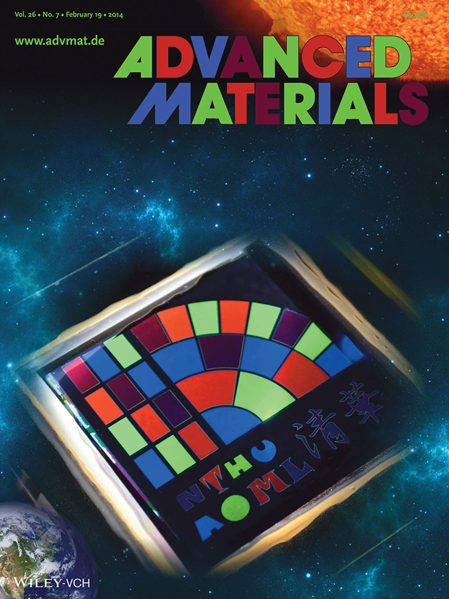
Yi Hong Chen, Chang-Wen Chen, Zheng-Yu Huang, and Wei-Chieh Lin's paper "Microcavity-embedded, Colour-tuneable Transparent Organic Solar Cells" is featured on the back cover of Advanced Materials, Volume 26, Issue 7! Cheers! (LINK)
ChemSusChem back cover
February 5, 2014
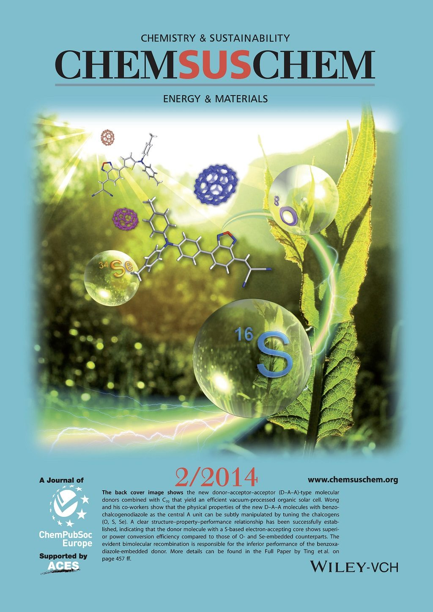
Yi Hong Chen's paper "Benzochalcogenodiazole-Based Donor–Acceptor–Acceptor Molecular Donors for Organic Solar Cells" is featured on the back cover of ChemsusChem, Volume 7, Issue 2! Cheers! (LINK)
Journal of Materials Chemistry A paper accepted
January 9, 2014
Congratulations! Jung-Hao Chang, Wei-Ching Huang and Yu-Ting Lin's paper "Highly Efficient Organic Solar Cells Using Solution-Processed Active Layer with Small Molecule Donor and Pristine Fullerene" has been accepted for publication in Journal of Materials Chemistry A (new SCI Journal, Journal of Materials Chemistry Impact Factor: 5.97)!!
2013
Successful Ph.D. dissertation defense
December 12, 2013
Congratulations to Yi-Hong Chen for successful Ph.D. dissertation defense!!(LINK)
Nanoscale paper accepted
December 2, 2013
Congratulations! Zheng-Yu Huang, Si-Wen Chiu, Chang-Wen Chen's paper "Spontaneous formation of light-trapping nano-structures for top-illumination organic solar cells" has been accepted for publication in Nanoscale (impact factor 6.233)!!
Organic Electronics paper accepted
November 30, 2013
Congratulations! Chia-Chan Fan, Ming-Hong Huang, and Wei-Chieh Lin's paper "Single-Emission-Layer White Organic Light-Emitting Devices: Chromaticity and Colour-Rendering Consideration" has been accepted for publication in Organic Electronics (impact factor 3.836)!!
ChemSusChem paper accepted
November 13, 2013
Congratulations! Yi-Hong Chen and our coworkers' paper "Benzochalcogenodiazole-Based Donor–Acceptor–Acceptor Molecular Donors for Organic Solar Cells" has been accepted for publication in ChemSusChem (impact factor 7.475)!!
Advanced Materials paper accepted
October 30, 2013
Congratulations! Yi-Hong Chen, Chang-Wen Chen, Zheng-Yu Huang, and Wei-Chieh Lin's paper "Microcavity-embedded, Colour-tuneable Transparent Organic Solar Cells" has been accepted for publication in Advanced Materials (impact factor 14.829)!!
NTHU New Faculty Research Award
October 15, 2013
Congratulations to Professor Hao-Wu Lin for winning of The 16th National Tsing Hua University New Faculty Research Award. Cheers!!! 賀林皓武教授獲清華大學第16屆新進人員研究獎!!!
Undergraduate Research Paper Award
October 10, 2013
Congratulations to Chen-Wei Li for winning of 2013 Undergraduate Research Paper Award. Cheers!!! 賀李辰偉獲102學年度大學部研究論文競賽佳作!!! (LINK)
Welcome new members
September 29, 2013
Welcome new members! PhD student: Sheng-Yi Hsiao (蕭聖議) and Undergraduate students: Yu-Jeng Shiau (蕭宇正), Jing Liu (劉靜).
Journal of Applied Physics paper accepted
September 25, 2013
Congratulations! Prof. Hao-Wu Lin and our collaborators' paper "Interface and thickness tuning for blade coated small-molecule organic light-emitting diodes with high power efficiency" has been accepted for publication in Journal of Applied Physics (impact factor 2.210)!!
Journal of Materials Chemistry C paper accepted
August 23, 2013
Congratulations! Wei-Chieh Lin, Wei-Ching Huang, Ming-Hong Huang, Chia-Chan Fan's paper "Bipolar Host Containing Carbazole/Dibenzothiophene for Efficient Solution-Processed Blue and White Phosphorescent OLEDs" has been accepted for publication in Journal of Materials Chemistry C (new SCI journal, Journal of Materials Chemistry impact factor 5.97)!!
ChemSusChem paper accepted
July 29, 2013
Congratulations! Po-Fan Yang and our collaborators' paper "Design of Os(II)-based Sensitizers for Dye-Sensitized Solar Cells: Influence of Heterocyclic Ancillaries" has been accepted for publication in ChemSusChem (impact factor 7.475)!!
Successful M.S. thesis defense
July 24, 2013
Congratulations to Zheng-Yu Huang, Wei-Ching Huang, Chih-Wei Lu and Chia-Chan Fan for successful M.S. thesis defense!!(LINK)
Welcome new members
July 6, 2013
Welcome new members! Undergraduate students: Chi-Yu Yang (楊基佑), Yi-An Lai (賴羿安), Fei-Fan Tsai (蔡非凡), Ting-Han Ko (柯廷漢) and Yun-Feng Kao (高韻峰).
Excellent Young Scholar Research Grant
July 2, 2013
Congratulations! Our lab has been granted "Excellent Young Scholar Research Grant, National Science Council, 2013-2016"(國科會優秀年輕學者研究計畫, 2013-2016)!! 「國科會優秀年輕學者研究計畫」係為培育具有研究潛力之年輕優秀學者，給予充分之經費補助，進行基礎及應用性之研究，使其研究能力及成果加速提昇。
Electronics Laboratory final presentation
June 27, 2013
Photos of Electronics Laboratory final presentation (電子學實驗期末發表實況照片) can be viewed via: (LINK) Enjoy!
JACS paper accepted
May 30, 2013
Congratulations! Yi-Hong Chen and our coworkers in Argonne National Laboratory's paper "Charge Carrier Dynamics of Vapor-Deposited Small-Molecule/Fullerene Organic Solar Cells" has been accepted for publication in Journal of the American Chemical Society (impact factor 9.907)!!
New Faculty Research Award
May 29, 2013
Congratulations to Professor Hao-Wu Lin for winning of The 3rd New Faculty Research Award - College of Engineering, National Tsin Hua University. Cheers!!! 賀林皓武教授獲第三屆清華大學工學院新進人員研究獎!!!
Yu-Ziang Hsu Scientific Paper Award
May 9, 2013
Congratulations to Professor Hao-Wu Lin for winning of The 11th Yu-Ziang Hsu Scientific Paper Award: Green Technology. Cheers!!! 賀林皓武教授獲第十一屆有庠科技論文獎:綠色科技!!! (LINK)
Welcome new members
March 3, 2013
Welcome new members! PhD student: Kai-Ming Chiang (江鎧名); Master students: Wei-Lun Tsai (蔡瑋倫), Jia-An Lee (李佳安); Undergraduate students: Chen-Wei Li (李辰偉), Chen-Zheng Ren-Wu (陳鄭仁武), Wei-Yu Liao (廖唯宇), Jiu-Xing Huang (黃久倖).
Organic Electronics paper accepted
February 17, 2013
Congratulations! Wei-Chieh Lin's paper "Solution-Processed Hexaazatriphenylene Hexacarbonitrile as a Universal Hole-Injection Layer for Organic Light-Emitting Diodes" has been accepted for publication in Organic Electronics (impact factor 4.047)!!
Organic Electronics paper accepted
February 6, 2013
Congratulations! Po-Fan Yang and Yu-Shih Wang's paper "Photophysical studies on D-pi-A dye-sensitized solar cells: Effects of pi-bridge and hexyloxy side chains in donor moieties" has been accepted for publication in Organic Electronics (impact factor 4.047)!!
2012
Journal of Materials Chemistry A paper accepted
November 26, 2012
Congratulations! Chih-Wei Lu, Yi-Hong Chen, Wei-Chieh Lin's paper "Pyridine-based Electron Transporting Materials for Highly Efficient Organic Solar Cells" has been accepted for publication in Journal of Materials Chemistry A (new SCI journal, Journal of Materials Chemistry impact factor 5.97)!!
First Prize Poster Award
October 26, 2012
Congratulations to graduate student Yi-Hong Chen for winning of the First Prize Poster Award (Vacuum Deposited Small Molecule Organic Solar Cells with Power Conversion Efficiency of 6.8%) in International Symposium on Organic and Dye-Sensitized Solar Cells 2012 (IS-OPVDSC 2012)!!
Advanced Functional Materials inside front cover
August 15, 2012
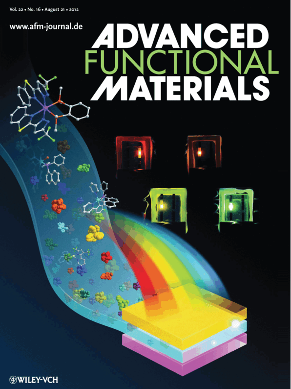
Ming-Hong Huang's paper "A Great Perspective of Os(II) Based Green to Red Phosphors for Solution-Processed, Highly Efficient Organic Light-Emitting Diodes" is featured on the inside front cover of Advanced Functional Materials, 2012, Vol. 22, Issue 16! Cheers! (LINK)
JACS paper accepted
July 25, 2012
Congratulations! Yi-Hong Chen, Chih-Wei Lu and Zheng-Yu Huang's paper "Vacuum-Deposited Small-Molecule Organic Solar Cells with High Power Conversion Efficiencies by Judicious Molecular Design and Device Optimization" has been accepted for publication in Journal of the American Chemical Society (impact factor 9.907)!!
ChemComm paper accepted
July 12, 2012
Congratulations! Wei-Ching Huang's paper "BODIPY dyes with β-conjugation and their applications for high-efficiency inverted small molecule solar cells" has been accepted for publication in ChemComm (impact factor 6.169)!!
Journal of Materials Chemistry inside back cover
June 19, 2012
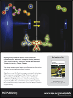
Ming-Hong Huang, Yi Hong Chen and Wei-Chieh Lin's paper "Novel Oxygen Sensor based on Terfluorene Thin-film and Its Enhanced Sensitivity by Stimulated Emission" is featured on the inside back cover of Journal of Materials Chemistry, 2012, Vol. 22, Issue 27! Cheers! (LINK)
Student research project approved
May 31, 2012
Congratulations! The research project "Solution Processed Organic Bilayer Solar Cells" of undergraduate student Chia-Ying Zhou has been approved for 2012 National Science Council undergraduate student research program.
Physical Chemistry Chemical Physics paper accepted
May 26, 2012
Congratulations! Yu-Shih Wang, Zheng-Yu Huang, Yi-Min Lin, and Chang-Wen Chen’s paper "Origins of Device Performance in Dicarboxyterpyridine Ru (II) Dye-Sensitized Solar Cells" has been accepted for publication in Physical Chemistry Chemical Physics (impact factor 3.454)!!
Organic Electronics paper accepted
May 17, 2012
Congratulations! Hao-Wei Kang, Zheng-Yu Huang, Chang-Wen Chen, and Yi-Hong Chen’s paper "An Effective Bilayer Cathode Buffer for Highly Efficient Small Molecule Organic Solar Cells" has been accepted for publication in Organic Electronics (impact factor 3.998)!!
Organic Electronics paper accepted
May 17, 2012
Congratulations! Yi-Hong Chen, Zheng-Yu Huang, Chang-Wen Chen’s paper "Highly Efficient Bifacial Transparent Organic Solar Cells Possessing > 3% Power Conversion Efficiency with 50% High Transparency" has been accepted for publication in Organic Electronics (impact factor 3.998)!!
Organic Electronics paper accepted
May 12, 2012
Congratulations! our paper "Unmodified small-molecule organic light-emitting diodes by blade coating" has been accepted for publication in Organic Electronics (impact factor 3.998)!!
Journal of Materials Chemistry paper accepted
May 8, 2012
Congratulations! Ming-Hong Huang, Yi Hong Chen and Wei-Chieh Lin's paper "Novel Oxygen Sensor based on Terfluorene Thin-film and Its Enhanced Sensitivity by Stimulated Emission" has been accepted for publication in Journal of Materials Chemistry (impact factor 5.10)!!
Advanced Materials Frontispiece
April 25, 2012
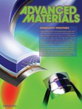
Si-Wen Chiu, Zheng-Yu Huang and Yi-Hong Chen's paper "Device Engineering for Highly Efficient Top-Illuminated Organic Solar Cells with Microcavity Structures" is featured on the frontispiece of Advanced Materials, 2012, Volume 24, Issue 17! Cheers! (LINK)
Advanced Functional Materials paper accepted
April 10, 2012
Congratulation! Ming-Hong Huang's paper "A Great Perspective of Os(II) Based Green to Red Phosphors for Solution-Processed, Highly Efficient Organic Light-Emitting Diodes" has been accepted for publication in Advanced Functional Materials (impact factor 8.49)!!
Welcome new members
March 12, 2012
Welcome new members! Master students:Po-Fan Yang (楊博帆), Kuan-Chen Chen (陳冠臻), Wei-Jung Chi (紀威榮)
Advanced Materials paper accepted
March 1, 2012
Congratulations! Si-Wen Chiu, Zheng-Yu Huang, and Yi-Hong Chen's paper "Device engineering for highly efficient top-illuminated organic solar cells with microcavity structures" has been accepted for publication in Advanced Materials (impact factor 10.880)!!
Welcome new members
February 5, 2012
Welcome new members! Undergraduate students:Wei-Hsuan Lin (林煒軒), Yu-Jing Chen (陳俞靜), Kuei-Lin Chan (詹貴麟), Chia-Ying Zhou (周佳瑩), Kai-Ming Chiang (江鎧名), Yu-Min Lin (林玉敏), Mei-Hsuan Chen (陳美璇), Kai-Chu Chang (張凱筑), Wei-Lun Tsai(蔡瑋倫), Yi-Chi Huang (黃奕錡), Fu-Ting Yen(顏甫庭)
ChemComm Cover
January 22, 2012
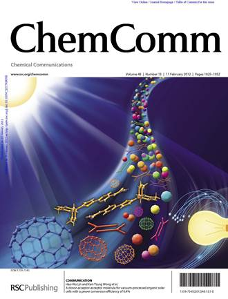
Si-Wen Chiu, Yi-Hong Chen and Zheng-Yu Huang's paper "A donor-acceptor-acceptor molecule for vacuum-processed organic solar cells with a power conversion efficiency of 6.4%" is featured on the front cover of ChemComm , 2012, Issue 13! Cheers! (LINK)
大學部專題說明會投影片
January 12, 2012
歡迎大二至大四同學加入我們!有興趣的同學請跟林皓武老師聯絡，email:hwlin@mx.nthu.edu.tw。
大學部專題說明會投影片檔案下載
2011
Organic Electronics paper accepted
December 31, 2011
Congratulations! Jung-Hao Chang, Yi-Hong Chen and Yu-Ting Lin's paper "Highly Efficient Inverted Rapid-Drying Blade-Coated Organic Solar Cells" has been accepted for publication in Organic Electronics (impact factor 3.998)!!
Approval of Ph.D. application
December 27, 2011
Congratulations to master student Ming-Hong Huang for approval of Ph.D. application!
ChemComm paper accepted
December 4, 2011
Congratulations! Si-Wen Chiu, Yi-Hong Chen and Zheng-Yu Huang's paper "A donor-acceptor-acceptor molecule for vacuum-processed organic solar cells with a power conversion efficiency of 6.4%" has been accepted for publication in ChemComm (impact factor 5.787)!!
Best poster award
November 6, 2011
Congratulations to graduate student Si-Wen Chiu for winning of the best poster award (6.4% Efficiency Small Molecule Organic Solar Cells) in The Asian Conference on Organic Electronics 2011!!
Winning of scholarship
November 3, 2011
Congratulations to graduate student Wei-Chieh Lin for winning of the "Principal scholarship award"($$$) !!
JACS paper accepted
September 1, 2011
Congratulations! Yi-Hong Chen and Zheng-Yu Huang's paper "A Low-Energy-Gap Organic Dye for High-Performance Small-Molecule Organic Solar Cells" have been accepted for publication in JACS (impact factor 9.019)!!
International conference paper accepted
September 1, 2011
Congratulations! Yi-Hong Chen's "Organic bilayer and planar mixed heterojunction solar cells based on novel coplanar pi-bridged D-pi-A molecule" The 6th Aceanian Conference on Dye-sensitized and Organic Solar Cells paper have been accepted!!!!
Organic Letter paper accepted
August 18, 2011
Congratulations! Chih-Wei Lu and Wei-Ching Huang's paper "New A-A-D-A-A Type Electron Donors for Small Molecule Organic Solar Cells" have been accepted for publication in Organic Letter (impact factor 5.250)!!
Welcome new members
August 8, 2011
Welcome new members!! (Ph.D. student) Wei-Chieh Lin !
Student research project approved
August 3, 2011
Congratulations! The research project "Exciton recombination lifetime in organic solar cells" of undergraduate student Yi-Min Lin has been approved for 2011 National Science Council undergraduate student research program.
Winning of scholarship
June 24, 2011
Congratulations to undergraduate student Yi-Min Lin for winning of the "Dr. Shun-I Chu ZyXEL" scholarship!!
ChemComm paper accepted
May 17, 2011
Congratulations! Yi-Hong Chen's paper "A new donor-acceptor molecule with uniaxial anisotropy for efficient vacuum-deposited organic solar cells" have been accepted for publication in ChemComm (impact factor 5.787)!!
2010
Welcome new members
November 1, 2010
Welcome new members!! (Graduate student) Zheng-Yu (David) Huang
Winning of scholarship
October 17, 2010
Congratulations to undergraduate student Jung-Hao Chang for approval of Ph.D. application and winning of the scholarship
International conference paper accepted
October 17, 2010
Congratulations! Chang-Wen Chen's and Yu-Ting Lin's A-COE 2010 papers have been accepted!!
International conference paper accepted
October 17, 2010
Congratulations! Chang-Wen Chen's ICFPE 2010 papers have been accepted!!
Student research project approved
June 29, 2010
Congratulations! The research project "Carrier dynamic of organic semiconductors" of undergraduate student Tsu-Cheng Chuang has been approved for 2010 National Science Council undergraduate student research program
Welcome new members
April 19, 2010
Welcome new members!! (Graduate student) Ming-Hong Huang, Si-Wen Cyu, Yu-Shih Wang, (Undergraduate student) Jung-Hao Chang
Welcome new members
March 17, 2010
Welcome new members!! (Undergraduate student) Jhih-Wei Lyu
Welcome new members
February 22, 2010
Welcome new members!! (Graduate student) Ke-Ren Jian, (Undergraduate student) Tzu-Cheng Chuang, Wei-Cing Huang, Chia-Chan Fan, Yi-Min Lin, Yun-Syuan Jhou, Kuan-Chen Chen, Hao-Wei Kang